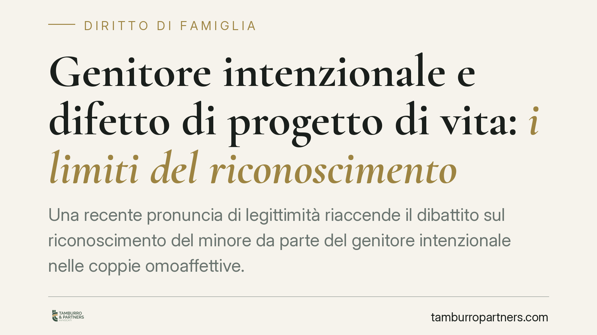

Genitore intenzionale e difetto di progetto di vita: i limiti del riconoscimento
Una recente pronuncia di legittimità riaccende il dibattito sul riconoscimento del minore da parte del genitore intenzionale nelle coppie omoaffettive. Il tema tocca il confine tra la forma dell'atto e la sostanza del legame affettivo, intrecciandosi con il quadro della procreazione medicalmente assistita e con l'interesse del minore alla stabilità del proprio status.

Il caso
La vicenda riguarda il riconoscimento di un minore operato dalla madre cosiddetta intenzionale, ossia la componente della coppia che non ha un legame genetico con il bambino ma che ha condiviso il percorso che ha portato alla nascita. Secondo quanto riportato dalle fonti giornalistiche, un'ordinanza della Cassazione Civile avrebbe ritenuto aggredibile l'atto laddove manchi un reale progetto di vita condiviso e un legame affettivo concreto con il minore.
Nota di cautela. Il numero e l'anno dell'ordinanza indicati dalle fonti divulgative (n. 18936/2026) non risultano ad oggi verificabili nel loro testo integrale. Le considerazioni che seguono si fondano quindi sul principio di diritto riferito dalla stampa specializzata, da trattare con prudenza fino alla lettura della motivazione.
Inquadramento normativo
Il riconoscimento del figlio è disciplinato dagli artt. 250 e seguenti del codice civile. Si tratta di un atto di stato, non liberamente revocabile da chi lo compie: una volta formato, produce effetti stabili sullo status del minore.
L'impugnazione del riconoscimento per difetto di veridicità è regolata dall'art. 263 c.c. Questo strumento è storicamente costruito attorno alla realtà biologica della filiazione: presuppone, cioè, che il riconoscimento non corrisponda al vero legame genetico. La legittimazione e i termini per agire sono tipizzati dalla norma, che distingue tra l'autore del riconoscimento, il soggetto riconosciuto e "chiunque vi abbia interesse", con termini decadenziali differenziati.
Qui si colloca il nodo più delicato. Nella procreazione medicalmente assistita la legge 40/2004 incide in modo rilevante. L'art. 8 attribuisce ai nati da PMA lo stato di figli della coppia che ha espresso il consenso. L'art. 9 preclude, a chi abbia prestato consenso alla PMA, l'azione di disconoscimento e l'impugnazione del riconoscimento per difetto di veridicità. La ratio è chiara: chi ha consapevolmente aderito al progetto procreativo non può poi far valere l'assenza di legame genetico, che era nota sin dall'origine.
Su questa linea si è attestata una consolidata giurisprudenza costituzionale e di legittimità, orientata a tutelare la continuità dello status del minore.
Il principio riferito e le sue tensioni
Il principio attribuito all'ordinanza va letto con rigore. Affermare che il riconoscimento del genitore intenzionale sia impugnabile per "mancanza di un progetto di vita" rappresenterebbe un'apertura in tensione con il quadro appena descritto. Il difetto di legame genetico nella filiazione intenzionale è consapevole fin dall'inizio: ricondurlo all'art. 263 c.c. significherebbe estendere uno strumento pensato per la non veridicità genetica a una fattispecie strutturalmente diversa.
Altrettanto delicata è la legittimazione dei familiari biologici — nel caso riportato, i nonni genetici — a impugnare l'atto. La platea dei soggetti legittimati ex art. 263 c.c. è tipizzata; la loro inclusione non è pacifica e andrebbe verificata sul testo della motivazione, insieme ai relativi termini decadenziali.
Va perciò sottolineato che, allo stato, si tratta dell'orientamento di una singola pronuncia, non di un principio consolidato. Il suo coordinamento con gli artt. 8 e 9 della legge 40/2004 e con la giurisprudenza costituzionale resta da chiarire.
Implicazioni pratiche
Per le coppie omoaffettive che hanno costruito o intendono costruire un progetto genitoriale, il punto di attenzione si sposta dalla forma dell'atto alla sostanza del rapporto. Se la giurisprudenza dovesse valorizzare l'effettività del legame affettivo e del progetto di vita, la documentazione del vissuto quotidiano e della condivisione genitoriale potrebbe assumere rilievo probatorio.
Resta centrale, in ogni caso, l'interesse del minore alla stabilità del proprio status: principio che i giudici richiamano costantemente come criterio di bilanciamento.
Cosa fare in concreto
- Verificare sempre il testo integrale e i dati identificativi della pronuncia prima di trarne conseguenze operative.
- Documentare in modo ordinato il percorso procreativo, inclusa la manifestazione del consenso alla PMA, elemento potenzialmente preclusivo di future impugnazioni.
- Conservare traccia del vissuto familiare quotidiano, utile a provare l'effettività del progetto genitoriale.
- Distinguere il quadro consolidato (legge 40/2004) dalle singole aperture giurisprudenziali, evitando conclusioni affrettate.
- Esaminare la posizione concreta con riferimento alla specifica fattispecie, poiché i termini e i soggetti legittimati variano secondo la modalità di formazione dello status.
Conclusione
La pronuncia riportata, se confermata nei termini divulgati, segnala una possibile linea di tensione tra la tutela dell'effettività del rapporto genitoriale e la stabilità dello status del minore garantita dalla legge 40/2004. La prudenza impone di attendere la motivazione e di valutarne la reale portata rispetto al diritto vivente.
Contributo informativo a cura di Tamburro & Partners - Avv. Giuseppe Tamburro. Non costituisce parere legale.
Ogni famiglia ha il suo equilibrio.
Separazione, divorzio, affidamento, assegno: se vuoi un confronto riservato su una specifica situazione, scrivi allo studio. Ti rispondiamo entro un giorno lavorativo.